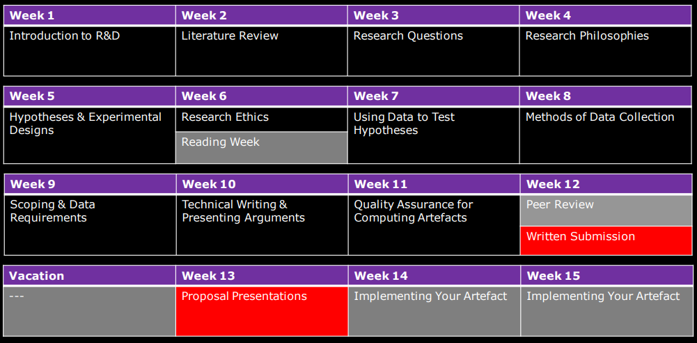
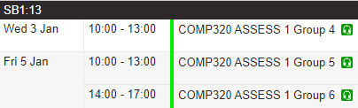

, v.
Digital Attendance System (SEATS)

Be aware of the system and check your attendance
Who am I?
-
Name: Dr Daniel Zhang -
Role: Senior Lecturer in Artificial Intelligence -
Teaching: MSc courses in Games Academy- Classical Artificial Intelligence
- Machine Learning
-
Background: - majored in Computer Science, AI/ML and its Applications
- worked for Rolls-Royce UTC, University of Southampton
- delivered 10+ successful software and production tools to Rolls-Royce for aircraft engine design and optimisation
- supported Rolls-Royce engineers in 5 R&D Centres: Bristol (UK), Derby (UK), Dahlewitz (Germany), North America (US), Bangalore (India)
Contact Information
-
Email: -
Booking: Book time with Daniel Zhang - Try to speak to me in the studio, especially during the teaching hours
- Or send direct message on
Microsoft Teams
Aim and Objectives
-
- Aim
- To help you to plan your
major -
- Objectives
-
Think about what you are going to do for your project? -
Collect and review relevant literatures -
Define the question and hypotheses -
Consolidate your thinking: methodology, quantitative analysis -
Discuss with your classmates about your topic selection (feedbacks, defending if needed) -
Conduct the proposed research -
Drive your progress towards aconclusion
Plan
Your Project
To come up with an idea of your project
-
Be creative: do something fancy -
Be diligent: keep on polishing your project -
Be reasonable: should be doable within the timescale
Study Block (SB) 1
-
Meetings: 10 times -
Time: Wednesday, 09.00-10.00 (2nd Oct - 12 Dec) -
Location: Microsoft Teams (online) -
Group: 3 students- LEVERIDGE, JAMIE: C#, C++, Computing for Games, interested in AI
- LOOTES, MICHAEL
- SAYWELL, BRENDAN: programming, C#, shaders module, engneering/computer science bg
SB1 Assessment
-
Time: Wed 3 Jan and Fri 5 Jan, 2024-
Wed 3 Jan: 10.00-13.00 -
Fri 4 Jan: 10.00-13.00 and 14.00-17.00
-
-
NOTE: check your time slot carefully! -
Location: Microsoft Teams (online) -
Staff: Me and John Speakman
Meeting Format
- This week: induction, know each other (topics if we have time?)
- The others: 15 mins per person, 15 mins group discussion
Useful Information
- Student Regulations
- Compass (Student Information Service)
- Your personal tutor
Questions?

Email:
IT'S YOUR TURN
- Who you are? Where are you from?
- What background do you have?
- What's your study and career aspiration?
- ...